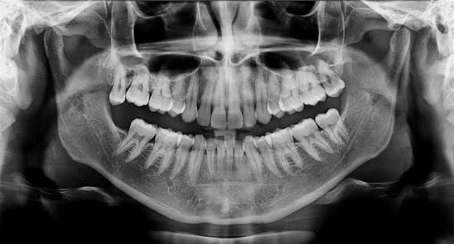
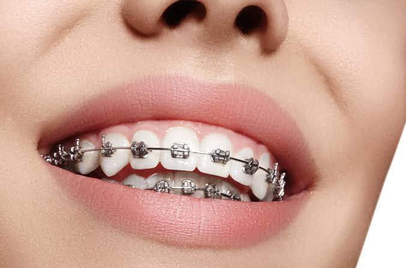

Endodoncia
La endodoncia es un procedimiento que permite salvar piezas dentales y que reduce los casos de extracción. Las endodoncias se realizan en piezas dentales con caries profundas, que propician la inflamación o la necrosis (muerte) de la pulpa dental. La pulpa dental es la parte más interior del diente, y donde se encuentran los nervios y los vasos sanguíneos. La inflamación de la pulpa suele manifestarse con dolor, que puede ser de distintos grados y darse en distintas ocasiones: frente al calor o frente al frío, en determinadas posturas, al comer o beber, etc.
Ortodoncia
Los dientes en mala posición y los que no muerden correctamente unos contra otro son difíciles de mantener limpios, corren riesgos de pérdida precoz debido a caries y enfermedades periodontales, y ocasionan una tensión extra sobre los músculos de la masticación que pueden desencadenar serios problemas en el futuro. Los tratamientos de ortodoncia tienen la ventaja de proporcionarnos una boca sana, una sonrisa de aspecto agradable y dientes con mayores posibilidades de durar toda la vida.
Cirugía Oral
Nuestros Especialistas en Cirugía Oral se dedican al diagnóstico y tratamiento de las enfermedades, traumatismos y defectos de las piezas dentarias, de los maxilares y de los tejidos blandos adyacentes que requieran intervención quirúrgica. Las intervenciones mas frecuentes son:
- Extracciones dentarias complejas
- Extracciones de piezas retenidas
- Extracciones de terceros molares (muelas del juicio)